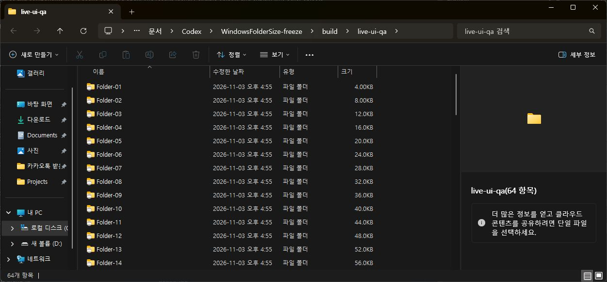

Tracefolio REPORTS & ISSUES
Tracefolio REPORTS & ISSUES여러 폴더 조회 시 탐색기 대기 제거
차단탐색기 크기 조회를 비동기 메모리 캐시로 분리하고 지연·무응답 브로커로 검증합니다.
목표와 완료 기준
다수 폴더 크기 조회가 브로커 응답을 기다리지 않게 수정
순차 작업 메뉴얼
순서대로 구현·QA를 확인합니다. 후속 회차에는1~5개만 선택하며 전체 미완료 목록은 보존합니다.
T01동기 대기 재현완료QA 통과
- 실행
- 현재 IPC 호출과 지연 서버의 실제 대기 시간 대조
- 완료 기준
- 문제 경로와 재현 수치 확인
- QA 절차
- 20ms CallNamedPipe에 350ms 지연 응답 적용
- 순서·수정
- 선행 작업 없음 · r1 · 전체 목록 보존
- 실제 결과
- 동기 호출 20ms 설정에도 364.37ms 대기 재현
- 최근 QA
- 364.37ms 지연 대기 재현 완료test-async 출력과 공식API조건대조 · 2026-11-03T07:40:22.4937206Z
T02비동기 캐시 구현완료QA 통과
- 실행
- UI는 캐시만 조회, IPC는 제한 시간 있는 전용 스레드로 분리
- 완료 기준
- UI 경로에서 IPC와 대기 제거
- QA 절차
- 무응답·지연·다수 폴더·숫자 유지 테스트
- 순서·수정
- T01 · r1 · 전체 목록 보존
- 실제 결과
- 전용 작업 스레드 및 UI 비대기 조회 구현; 10000회 총52.54ms, 최악136.90µs
- 최근 QA
- 10000회 비대기조회·캐시갱신·장애숫자유지 통과수정후 test-async PASS · 2026-11-03T07:40:22.4937206Z
T03회귀와 산출물 고정완료QA 통과
- 실행
- 네이티브 속성 표시 회귀, 빌드, MSI 구조와 해시 확인
- 완료 기준
- 테스트 통과 및 최신 단일 설치 파일
- QA 절차
- headless 테스트 실행과 MSI 검증
- 순서·수정
- T02 · r1 · 전체 목록 보존
- 실제 결과
- 네이티브 Windows 속성 표시·정준 변환 회귀, 빌드 및 MSI 검증 통과
- 최근 QA
- 빌드·네이티브표시·MSI·원본dist 해시 동일; Defender검사0고정MSI SHA256 0161022c296a7e569c34a22fe3f63e02cca50853c7d838e1818d368a083fb3f8 · 2026-11-03T07:40:22.4937206Z
T04보고·공개 검증완료QA 통과
- 실행
- QA 근거와 적용 보류 사유를 공개 보고서로 게시
- 완료 기준
- 개별 보고서 외부 접근 성공
- QA 절차
- 빌드·링크 검사와 배포 SHA·HTTP 본문 확인
- 순서·수정
- T03 · r1 · 전체 목록 보존
- 실제 결과
- 배포06f650ae 성공, 개별 공개 HTML HTTP200 및 재현·측정 본문 대조
- 최근 QA
- 850 보고서·30171 로컬링크 검증, CI06f650ae 배포성공, 공개개별보고서200 및 본문일치https://mdj0126.github.io/codex-config/projects/windowsfoldersize/reports/2026-11-03-bug-20261103073314431-v1.0.0.html · 2026-11-03T07:40:22.4937206Z
T051.0.15 충돌 수정·설치 검증완료QA 통과
- 실행
- 로더 진입 버퍼 축소, 작은 스택 회귀와 비동기 검사, MSI 검증, 실제15 설치·로드 DLL 대조
- 완료 기준
- MSI0, 설치/빌드 DLL SHA256 일치, 실제 탐색기15 DLL, 설치 이후 새 충돌 이벤트 없음. 실제 크기 표시 기준은 T06에 유지.
- QA 절차
- 설치로그·파일 SHA256·실제 프로세스 모듈 확인
- 순서·수정
- T03 · r3 · 이번 회차 대상
- 실제 결과
- MSI 2026-11-03 18:19:28 KST 반환0. 두 탐색기 PID37776/11944에서15 DLL. DLL SHA B419AAF1696F9FFD723403D2B0A602EA171E20EAA9260E78FCEB812870EF7747 일치. 64KiB 스레드 기존1114/수정0, async10000회58.27ms/최악162.9us. 설치 후18:22 조회까지 새 탐색기충돌 이벤트 없음.
- 최근 QA
- MSI0, 실제15 DLL 두프로세스, 설치/빌드해시동일. smallstack0, autoStart1, asyncstressPASS, MSIICE0.install15.log, 파일SHA256, 프로세스모듈, test출력 · 2026-11-03T09:22:42.3009624Z

T06실제 GUI 반복 QA와 공개 결과차단QA 차단
- 실행
- 64폴더 탐색·정렬·이동과 파일 수정/생성/삭제를 조작하여 응답·용량 반영 확인, 전후 캡처와 보고 게시
- 완료 기준
- 메뉴 없는 초기 표시, 64폴더 UI응답·정확한 변경 반영, 브로커 부재 시에도UI응답
- QA 절차
- 실제 화면 값, QAfixture 크기, 전후 캡처·공개URL 대조
- 순서·수정
- T05 · r3 · 이번 회차 대상
- 실제 결과
- 최신 실제 화면은64폴더의 크기가 비어 있음.15 DLL 로딩은 확인했으나 자동 표시·변경 갱신·GUI응답 QA 미통과. 사용자 컴퓨터 사용 재개 및 제어 금지로 화면 조작·창실행·재시작 보류.
- 최근 QA
- 64폴더실제화면크기미표시. 자동표시·변경·GUI조작미통과. 사용자제어금지로화면조작종료.컴퓨터유즈마지막AX 및 사용자메시지 · 2026-11-03T09:22:42.3009624Z
QA 반복 기록
실패 → 수정 → 해당 QA → 영향 범위 회귀 → 전체 최종 QA 순서로 확인합니다. 과거 실패를 삭제하지 않습니다.
Q01 · 작업 QA2026-11-03T07:33:13.2203206Z1/1 통과
지연 응답의 동기 대기 재현
20ms 설정의 CallNamedPipe가 지연 응답에 364.37ms 대기
src/async_cache_test.cpp 실제 named pipe 서버 350ms 지연Q02 · 작업 QA2026-11-03T07:33:13.2203206Z0/1 통과
최초 캐시 경합 검증 실패 보존
try_lock 경합 때 기본 queued 응답으로 돌아가 숫자 유지 검사 실패
첫 test-async 실행의 numeric retention FAILQ03 · 회귀 QA2026-11-03T07:33:13.2203206Z2/2 통과
호출 스레드별 마지막 스냅샷으로 경합 수정 후 재검증
10000회52.54ms, 최악136.90µs; 100ms IPC deadline111.81ms; 호출 스레드 I/O0; 숫자 유지 PASS
scripts/test-async.cmd 실행 결과진행률·큐·실패·완료의 Windows 속성/COM 표시 모두 통과; MSI 검증0; SHA256일치
DisplayTest·ProgressTest, WiX ICE 검사; SHA256 0161022c296a7e569c34a22fe3f63e02cca50853c7d838e1818d368a083fb3f8Q04 · 전체 최종 QA2026-11-03T07:40:22.4937206Z4/4 통과
전체 코드·headless QA와 공개 보고 확인
364.37ms 지연 대기 재현 완료
test-async 출력과 공식API조건대조10000회 비대기조회·캐시갱신·장애숫자유지 통과
수정후 test-async PASS빌드·네이티브표시·MSI·원본dist 해시 동일; Defender검사0
고정MSI SHA256 0161022c296a7e569c34a22fe3f63e02cca50853c7d838e1818d368a083fb3f8850 보고서·30171 로컬링크 검증, CI06f650ae 배포성공, 공개개별보고서200 및 본문일치
https://mdj0126.github.io/codex-config/projects/windowsfoldersize/reports/2026-11-03-bug-20261103073314431-v1.0.0.htmlQ05 · 작업 QA2026-11-03T08:01:20.5134574Z0/1 통과
설치 시작 후 관리자 보안 창에서 대기
Windows 관리자 승인이 필요한 보안 창이 표시돼 설치 대기. 보안 창 자동 조작 금지 규칙에 따라 승인 요청 전달.
설치 로그 MSI_LUA Elevation required; 실제 broker file version1.0.11; ComputerUse window consent.exe 확인Q06 · 작업 QA2026-11-03T08:23:56.6975158Z1/2 통과
1.0.13 설치 성공과 실제 GUI 초기화 실패
MSI0, 설치된 broker·maintenance·DLL hash가 빌드와 동일; 실제13 DLL 로드
install-1.0.13.log MainEngineThread0;프로세스3256;Explorer10376모듈13새 창에서 공백, 클래식 메뉴 호출 뒤에야 크기 표시. 별도24232 Explorer는11 DLL 유지
실제ComputerUse전후tree·module대조; nativeautostartprobe13status0/14status1Q07 · 회귀 QA2026-11-03T08:33:17.4885400Z1/1 통과
실제13 브로커의64폴더와 차액 갱신 검사
64폴더합계전부정확.4KB→1MiB31ms,추가2KiB2344ms,삭제250ms,복원1344ms.정상변경 중pending없음.이 검사는 브로커에 대한 검사이며 전체GUI QA통과를 의미하지 않음.
build/live_backend_qa.cpp 실행출력;실제설치13 broker3256 session1Q08 · 작업 QA2026-11-03T08:33:17.4962207Z0/1 통과
14수정 회귀 통과와 두 번째 UAC 대기
14자동초기화status1/13baseline0;비동기10000호출59.86ms;native표시·MSI검증통과.설치는Windows관리자승인대기.
install-1.0.14.log MSI_LUA Elevation required; 사용자에게 두 번째 승인 카드 전달Q09 · 작업 QA2026-11-03T09:22:42.2744237Z0/1 통과
14 실제 탐색기 충돌과 작은스택 재현
Windows Application1000 Explorer.EXE / WindowsFolderSizeHook14 / c0000005 /9ce7. 재링크MAP에서stackprobe. 64KiB LoadLibrary 초기화1114 재현.
로컬 Windows Event1000 및 small_stack_test 실행Q10 · 회귀 QA2026-11-03T09:22:42.3009624Z1/2 통과
15 설치·네이티브 회귀, GUI는사용자제어금지로보류
MSI0, 실제15 DLL 두프로세스, 설치/빌드해시동일. smallstack0, autoStart1, asyncstressPASS, MSIICE0.
install15.log, 파일SHA256, 프로세스모듈, test출력64폴더실제화면크기미표시. 자동표시·변경·GUI조작미통과. 사용자제어금지로화면조작종료.
컴퓨터유즈마지막AX 및 사용자메시지남은 작업과 다음 반복
사용자 화면 제어 재허용 후 크기 미표시 원인 확인, 실제64폴더 초기표시·변경·정렬/이동·브로커장애 GUI QA. 완료로 보고하지 않음.
변경 이유: 14 실제 GUI QA에서 탐색기 접근 위반(모듈 offset 9ce7) 발견. 64KiB 로더 스레드에서 기존1114/수정0 재현 후15 설치. T05 revision3에 설치·작은스택 회귀, T06 revision3에 기존 전체 GUI 기준 유지. 사용자가 컴퓨터 사용 재개로 화면 제어를 금지하여 GUI QA는 보류.
다음 작업: T06 · 실제 GUI 반복 QA와 공개 결과
남은 작업으로 소수 후속 회차 만들기다른 버전·회차 7개
2회차 · v1.0.6 · 2026-11-03T08:33:24.229Z · 차단2회차 · v1.0.5 · 2026-11-03T08:24:04.044Z · 작업 중2회차 · v1.0.4 · 2026-11-03T08:02:50.979Z · 차단2회차 · v1.0.3 · 2026-11-03T07:57:47.536Z · 작업 중1회차 · v1.0.2 · 2026-11-03T07:40:23.121Z · 완료1회차 · v1.0.1 · 2026-11-03T07:33:14.036Z · 작업 중1회차 · v1.0.0 · 2026-11-03T07:28:13.288Z · 작업 중작업 시간
제안 시간: 후속 설치·GUI QA 5~10분
실제로 완료된 시간: 16:54:20 KST 착수,18:19:28 KST15설치. 현재 전체GUI QA미완료. 제안5~10분초과.
XERJ: 미사용 — MCP 미제공, 프로젝트 검색 스크립트 없음; rg와 현재 소스로 대조